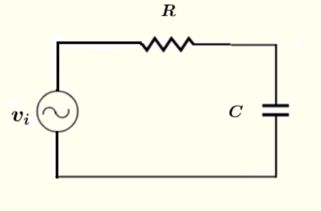

This will create a border around your content that transitions from red to violet in a linear gradient. You can adjust the thickness of the border and the colors of the gradient by modifying the border and border-image properties in the CSS.
Note that the border-image property is not supported in all browsers, so you may want to include fallbacks for older browsers.